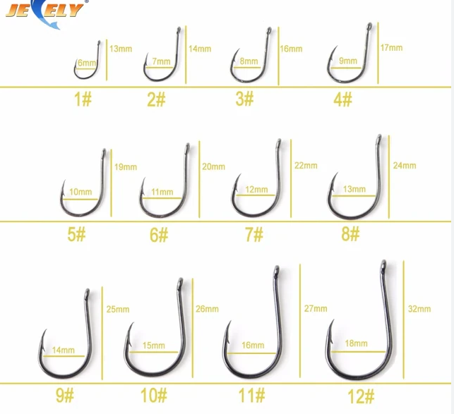
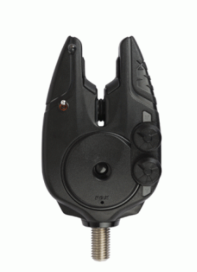
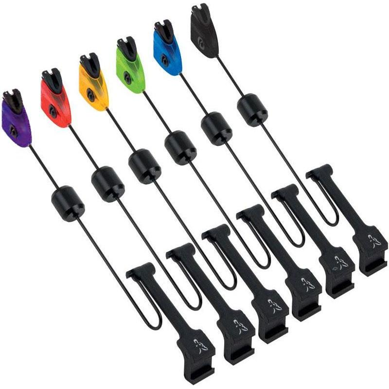
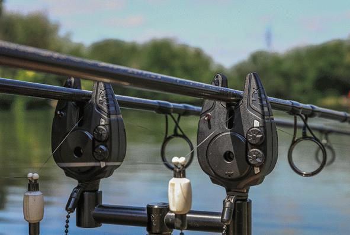

Matériel de Pêche
La canne à pêche
La canne à pêche est l'outil de base pour tout pêcheur de carpes. Les cannes spécifiquement conçues pour la pêche de la carpe sont souvent plus longues, offrant une meilleure portée pour lancer les appâts à des distances plus importantes. Elles sont également conçues pour gérer le poids et la force de ces puissants poissons.
Moulinet
Le choix du moulinet est crucial pour la pêche de la carpe. Il doit avoir une capacité de ligne adéquate et un système de frein robuste pour faire face aux sprints rapides et puissants de la carpe. Le chiffre présent sur le côté du moulinet représente la taille de celui- ci pour la carpe, sa taille peut être entre 5000 pour les plus petits jusqu'à 16000 pour les plus gros. Ce moulinet peut contenir environ 550 m de fil de 35/100
Ligne de Pêche
Une ligne de pêche résistante est nécessaire pour résister à la force de la carpe. Les lignes tressées ou nylon sont couramment utilisées, offrant une résistance élevée et une faible visibilité sous l'eau.
Montages et Hameçons
Différents montages sont utilisés, tels que le montage hélicoptère ou le montage à cheveu qui sont des montage de basse pour présenter l'appât de manière attrayante. Les hameçons doivent être suffisamment robustes pour supporter la force de la carpe.
Tout les types d'hameçons :
Et voici deux montages possible :
Montage cheveux

Montage hélicoptère

Équipement de Détection :
Les détecteurs de touche et les écureuils électroniques sont essentiels pour signaler les touches, car la carpe peut être subtile dans sa prise de l'appât.
Comment ça s'utilise ?
La canne à pêche est posée sur un détecteur qui a une petite fente avec une molette pour y placer le fil lors de la touche le poisson tire sur le fil ce qui fait tourner la molette et qui engendre un signal sonore puissant pour avertir le pêcheur. Ce qu' on appel écureuils c'est un poid placer entre le détecteur et le moulinet sur le fil est qui permet de tirer le fil si le poisson revient en direction de la canne
Éléments qui composent l'équipement de détection :
Détecteur

Et pour finir, le système mis en place
